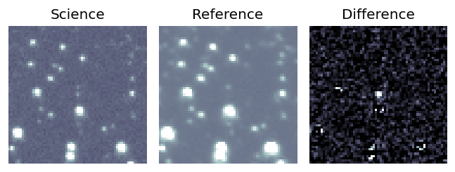
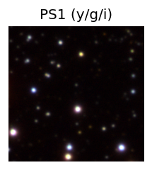
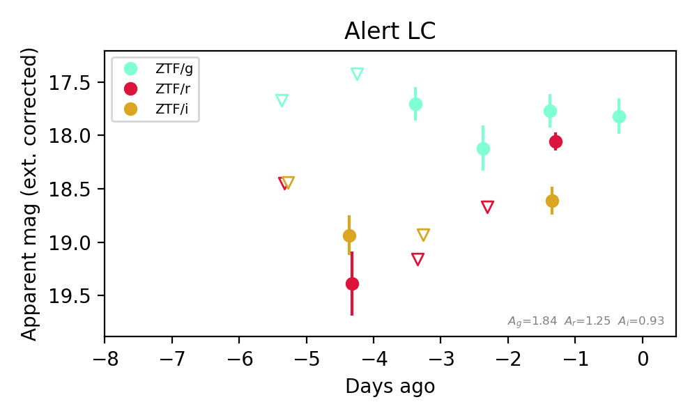
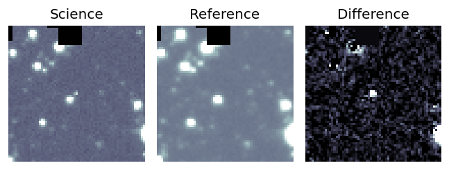
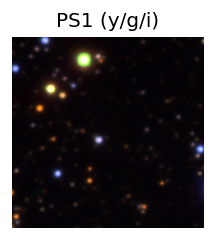
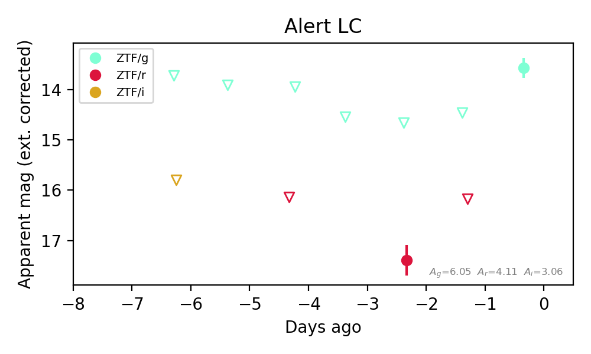
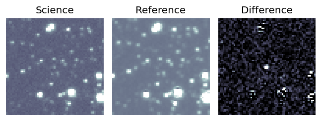
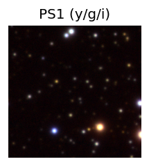
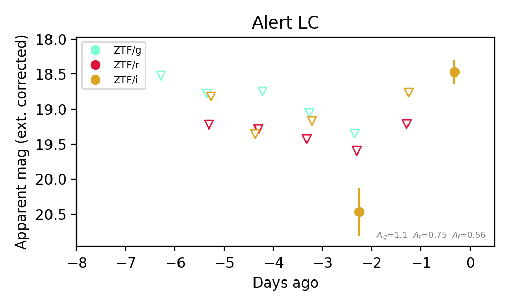

Candidate List 20260903Last night — ZTF: 2,041 passed basic cuts (63 young) · LSST: 0 passed basic cuts (0 young)Previous Day Next Day
Section 1: New Sources (age<1d) Section 2: Old (1-5d) sources observed last nightplaceholder
Section 1: New Afterglow/FBOT Cands Last Night (0)
Section 2: Older Sources Observed Last Night (10)
0. [ZTF] ZTF26abramlb (FBOT?) [NED transient: PSO J011.2292+41.5531 (V*, 8.5″) — reported, not trusted] [Back to Top] [Share] [Trigger Swift] [Fritz Alert] [Fritz Source] [Lasair]RA, Dec: 11.22607, 41.55293 0h44m54.26s, 41d33m10.53sGalactic (l, b): 121.62, -21.30218 ext(g-r) = 0.488


TESS: Sectors [17 57 84]
PS1: 1 source in 3 arcsec Closest: d = 1.09 arcsec photoz=0.16+/-0.03 peak abs mag = -25.58
LegacySurvey: 0 sources in 3 arcsec

Extinction-corrected gr color:
From alerts: -0.61 +/- 0.03 mag
Rise Rate:
g: 0.81 mag/day
r: 0.64 mag/day
Fade Rate:
1. [ZTF] ZTF26abribvs (FBOT?) [Back to Top] [Share] [Trigger Swift] [Fritz Alert] [Fritz Source] [Lasair]RA, Dec: 286.30246, -6.28506 19h 5m12.59s, -6d-17m-6.21sGalactic (l, b): 28.88418, -5.9146 ext(g-r) = 0.59


TESS: Sectors 80
PS1: 1 source in 3 arcsec Closest: d = 0.61 arcsec photoz=0.19+/-0.34 peak abs mag = -21.87
LegacySurvey: 0 sources in 3 arcsec

Extinction-corrected gr color:
From alerts: -0.29 +/- 0.18 mag
Extinction-corrected gi color:
From alerts: -0.84 +/- 0.2 mag
Extinction-corrected ri color:
From alerts: -0.56 +/- 0.15 mag
Rise Rate:
g: 0.1 mag/day
r: 0.61 mag/day
i: 0.17 mag/day
Fade Rate:
2. [ZTF] ZTF26abrmdnv (Afterglow?FBOT?) [Back to Top] [Share] [Trigger Swift] [Fritz Alert] [Fritz Source] [Lasair]RA, Dec: 357.1566, 50.42315 23h48m37.58s, 50d25m23.33sGalactic (l, b): 112.80744, -11.20976 ext(g-r) = 0.196


TESS: Sectors [17 24 57 84]
PS1: 1 source in 3 arcsec Closest: d = 7.58 arcsec photoz=0.09+/-0.02 peak abs mag = -19.86
LegacySurvey: 0 sources in 3 arcsec

Extinction-corrected gr color:
From alerts: -0.14 +/- 0.19 mag
Consistent with synchrotron, g-r>0!
Rise Rate:
g: 0.59 mag/day
r: 0.37 mag/day
Fade Rate:
3. [ZTF] ZTF26abrpjdl (Afterglow?) [Back to Top] [Share] [Trigger Swift] [Fritz Alert] [Fritz Source] [Lasair]RA, Dec: 320.11244, 2.17822 21h20m26.99s, 2d10m41.58sGalactic (l, b): 54.20305, -31.40075 ext(g-r) = 0.064


TESS: Sectors [55 82]
SDSS (<15 kpc):Found SDSS phot-z: z=0.10; peak abs mag = -19.40
PS1: 0 sources in 3 arcsec
LegacySurvey: 1 sources in 3 arcsec Closest: d = 2.83 arcsec, 322.0 deg (east of north) photoz=0.07 (68% bounds 0.05, 0.11), type=REX peak abs mag (ext. corrected) = -18.73 (68% bounds -17.7, -19.58)

Extinction-corrected gr color:
From alerts: 0.12 +/- 0.2 mag
Extinction-corrected gi color:
From alerts: -0.63 +/- 0.36 mag
Extinction-corrected ri color:
From alerts: -0.14 +/- 0.17 mag
Consistent with synchrotron, g-r>0!
Rise Rate:
g: 0.32 mag/day
r: 0.43 mag/day
i: 0.63 mag/day
Fade Rate:
4. [ZTF] ZTF26abrshyo (Afterglow?) [Back to Top] [Share] [Trigger Swift] [Fritz Alert] [Fritz Source] [Lasair]RA, Dec: 284.64822, -9.46929 18h58m35.57s, -9d-28m-9.45sGalactic (l, b): 25.28429, -5.87853 ext(g-r) = 0.357


TESS: Sectors 80
PS1: 0 sources in 3 arcsec
LegacySurvey: 0 sources in 3 arcsec

Extinction-corrected gr color:
From alerts: -0.02 +/- 0.18 mag
Consistent with synchrotron, g-r>0!
Rise Rate:
g: 0.69 mag/day
r: 1.31 mag/day
Fade Rate:
5. [ZTF] ZTF26abrvdps (Afterglow?FBOT?) [Back to Top] [Share] [Trigger Swift] [Fritz Alert] [Fritz Source] [Lasair]RA, Dec: 245.30086, 57.63088 16h21m12.21s, 57d37m51.18sGalactic (l, b): 87.78822, 42.499 ext(g-r) = 0.012


TESS: Sectors [ 15 16 19 22 23 24 25 50 51 52 56 58 76 77 78 79 82 83
86 117 121]
SDSS (<15 kpc):Found SDSS phot-z: z=0.45; peak abs mag = -24.60
PS1: 0 sources in 3 arcsec
LegacySurvey: 1 sources in 3 arcsec Closest: d = 1.38 arcsec, 97.2 deg (east of north) photoz=0.9 (68% bounds 0.55, 1.21), type=REX peak abs mag (ext. corrected) = -26.39 (68% bounds -25.09, -27.19)

Extinction-corrected gr color:
From alerts: 0.01 +/- 0.06 mag
Consistent with synchrotron, g-r>0!
Rise Rate:
g: 0.46 mag/day
r: 0.69 mag/day
Fade Rate:
6. [ZTF] ZTF26abrvicp (Afterglow?) [Back to Top] [Share] [Trigger Swift] [Fritz Alert] [Fritz Source] [Lasair]RA, Dec: 250.95807, 3.6823 16h43m49.94s, 3d40m56.28sGalactic (l, b): 20.72286, 29.90984 ext(g-r) = 0.08


TESS: Sectors 117
PS1: 0 sources in 3 arcsec
LegacySurvey: 1 sources in 3 arcsec Closest: d = 7.28 arcsec, 52.8 deg (east of north) photoz=0.95 (68% bounds 0.85, 1.06), type=REX peak abs mag (ext. corrected) = -26.73 (68% bounds -26.45, -27.02)

Extinction-corrected gr color:
From alerts: -0.71 +/- 99 mag
Rise Rate:
g: 0.74 mag/day
r: 1.85 mag/day
Fade Rate:
r: 2.37 mag/day
7. [ZTF] ZTF26abrvqha (FBOT?) [Back to Top] [Share] [Trigger Swift] [Fritz Alert] [Fritz Source] [Lasair]RA, Dec: 294.74334, 18.8484 19h38m58.40s, 18d50m54.26sGalactic (l, b): 55.05007, -1.49752 ext(g-r) = 1.939


TESS: Sectors [ 14 40 41 54 81 119]
PS1: 1 source in 3 arcsec Closest: d = 4.15 arcsec photoz=0.46+/-0.08 peak abs mag = -28.56
LegacySurvey: 0 sources in 3 arcsec

Extinction-corrected gr color:
From alerts: -2.74 +/- 99 mag
Rise Rate:
g: 0.85 mag/day
Fade Rate:
8. [ZTF] ZTF26abrvyxr (Afterglow?) [Back to Top] [Share] [Trigger Swift] [Fritz Alert] [Fritz Source] [Lasair]RA, Dec: 289.73561, -5.70376 19h18m56.55s, -5d-42m-13.52sGalactic (l, b): 30.95325, -8.70475 ext(g-r) = 0.538


TESS: Sectors [54 80]
PS1: 0 sources in 3 arcsec
LegacySurvey: 0 sources in 3 arcsec

Extinction-corrected gr color:
From alerts: -0.01 +/- 0.5 mag
Extinction-corrected gi color:
From alerts: 1.43 +/- 99 mag
Extinction-corrected ri color:
From alerts: 0.72 +/- 99 mag
Consistent with synchrotron, g-r>0!
Rise Rate:
i: 1.73 mag/day
Fade Rate:
9. [ZTF] ZTF26abrwcmd (FBOT?) [Back to Top] [Share] [Trigger Swift] [Fritz Alert] [Fritz Source] [Lasair]RA, Dec: 293.77099, 7.87292 19h35m5.04s, 7d52m22.49sGalactic (l, b): 44.96921, -5.99383 ext(g-r) = 0.354


TESS: Sectors [54 81]
PS1: 1 source in 3 arcsec Closest: d = 1.71 arcsec photoz=0.53+/-0.01 peak abs mag = -23.99
LegacySurvey: 0 sources in 3 arcsec

Extinction-corrected gi color:
From alerts: -1.12 +/- 99 mag
Extinction-corrected ri color:
From alerts: -0.87 +/- 99 mag
Rise Rate:
i: 1.03 mag/day
Fade Rate: